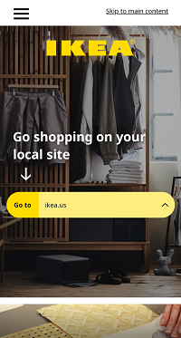
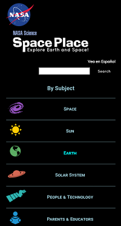
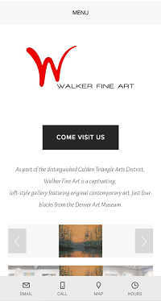

Alignment
Ikea.com
Alignment is an important principle when designing websites because when elements are properly aligned, it creates a more polished and professional look. Good alignment can draw your eye across the page in the way that the designer intends to page to be seen. This Ikea website shows good alignment with the phrase "Go shopping on your local site" neatly aligned with the tool bar they want the user to use.
Contrast
Spaceplace.nasa.gov
The principle of contrast is used to bring your attention to the most important element on the page and make it stand out. Contrast can also be used to create a focal point and create a more visually interesting page. It helps differentiate the main points from the lesser information. On this website for Nasa, the black background brings to mind images of space and the white text and search bar stands out and brings your focus right to where you can start searching the site.
White Space/Clean Design
WalkerFineArt.com
When using white space, the goal is to give the viewers eyes a place to rest. You don't want a busy screen where there are too many elements to take in all at once. This makes for a more clean design with the elements laid out with enough room for each to stand out in the way that they are supposed to. The Walker Fine Art page is a good example of white space and clean design. The elegent "W" in their logo stands by itself, a striking image that the eye is immediately drawn to.